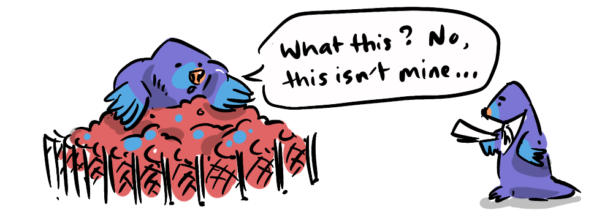

In his 1797 pamphlet 'Agrarian Justice', Thomas Paine makes an impassioned case for land and wealth taxes based not on charity or even expedience, but on the injustice inherent in the ownership of private property. Paine shows that right from the inception of our modern societies, the option to tax wealth and land has been a justifiable, well-considered and practicable option.
There could be no such thing as landed property originally. Man did not make the earth, and, though he had a natural right to occupy it, he had no right to locate as his property in perpetuity any part of it; neither did the Creator of the earth open a land-office, from whence the first title-deeds should issue.
Paine makes the important point that no human made this land. At the same time he acknowledges the non-zero-sum benefits of private ownership for the purposes of cultivation and personal security. Yet the fact remains that the means by which the initial proprietors acquired private land is necessarily not just, but is rather a result of luck (the first to be there), might (the first to gain dominance) or plain theft.
In advocating the case of the persons thus dispossessed, it is a right, and not a charity, that I am pleading for.

While the current owners have paid for the land—making it unjust for the government to simply expropriate it—it stands that the people who don't own private land have effectively been dispossessed of their "natural right" to land.
This dispossession is set in high-relief when Paine observes that many "civilised" poor live in greater poverty than indigenous populations, whom he praises for having no extreme poverty despite living without the benefits afforded by modern civilisation.
To understand what the state of society ought to be, it is necessary to have some idea of the natural and primitive state of man; such as it is at this day among the Indians of North America...

Given that the cultivation of the land provides added value, Paine contends that it is therefore not justified that anyone, as part of this system, has worse living conditions than they would in a society without such added value.
The thing, therefore, now to be done is to remedy the evils and preserve the benefits.
Paine proposes that those who own land should pay a Ground Rent of 3% of the land value. This ground rent would produce a fund that could compensate for the loss of natural inheritance by means of:
- a large lump sum for all citizens at age 21
- a pension
It's important to note that ground rent is not equivalent to 'rates', as rates are merely absorbed as general expenses for the upkeep of a property's surroundings and facilities.
He goes further to point out that those that benefit from wealth (not just land) in this civilisation, do so owing to society—without which their affluence would not be possible.
Personal property is the effect of society; and it is as impossible for an individual to acquire personal property without the aid of society, as it is for him to make land originally.
He proposed that a 10% inheritance tax would go to pay this debt to society.
It might be argued that in many western countries we have reached a level where even our poorest live above a level of pre-agricultural societies. Even granting this, the same cannot be said of sweatshop workers in poorer countries who make our clothes and electronics, who are part of our global society too.
Even in wealthy countries, Paine's logic holds that vast (and growing) differences in wealth are unjustified, when based (largely) on an accident of history.
The number of 3% maps perfectly on to Thomas Piketty's shortfall between the rate of return on investment and the growth of the economy, which he encapsulates in his simple formula R > G; where R = 4.5%, and G = 1.5% with the shortfall being 3%. A tax at this level would neutralise the advantage of investing in land, returning it to its proper role as a place to live, not a means of accumulating passive wealth.
Opponents of wealth taxes claim they are simply not feasible. In Agrarian Justice Paine goes into great detail about how to implement these taxes, providing specific numbers and demonstrating balances pertaining to the population and budget of the time. But is it possible today?
The benefit of Paine's proposal is that the taxes are applied to tangible assets and clear transferals of wealth; land and inheritance. While wealth can move around easily, land cannot. Inheritance tax can be avoided through transferring wealth throughout one's life rather than in a lump sum upon death, but this, in itself, is a form of redistribution. If the wealthy are incentivised to shift their wealth to younger family members, and they in turn are incentivised against investing that money in static assets like land, then more money flows into the working economy, which actually leads to greater economic redistribution and growth.
There are many mechanisms to avoid taxes of all types. As I see it, this is a reason to address those mechanisms, not to resign ourselves to the status quo. Paine reminds us that at some point we designed and built these systems, and they could have been very different. Imagine building an income tax system from scratch today, seems pretty unfeasible, right? And yet countries around the world have such systems.
Thomas Paine wasn’t just a revolutionary rabble-rouser—he was one of the first to articulate a rights-based justification for redistributive wealth policy. His ideas remain uncannily relevant, and his proposal was neither utopian nor punitive. It was simply just.